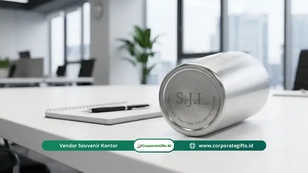

Corporate Gifts ID - Tren souvenir halalbihalal kantor 2026 didominasi oleh hadiah fungsional, personalisasi premium, dan konsep ramah lingkungan yang mendukung pemulihan serta kesejahteraan karyawan setelah libur panjang. Panduan ini merangkum ide dan tren souvenir halalbihalal kantor terkini agar tim HR dapat memilih hadiah yang benar-benar terpakai, bukan berakhir di tumpukan barang bekas.
Pernahkah Anda melihat karyawan membuang bingkisan kantor ke tempat penampungan barang bekas? Kenyataan ini tentu menyakitkan bagi tim yang sudah bersusah payah menyiapkannya. Tahun ini, lupakan hadiah pajangan meja yang membosankan. Jika perusahaan Anda tidak segera beradaptasi, upaya membangun kebanggaan tim yang solid bisa tertinggal dari kompetitor.
Di tengah ketatnya persaingan corporate gifting 2026, memilih hadiah yang tepat bukan lagi sekadar rutinitas tahunan belaka. Ini adalah amunisi jitu untuk employer branding perusahaan sekaligus menjaga loyalitas karyawan jangka panjang. Kami memandu Anda menemukan bingkisan yang tidak hanya indah dipandang, tetapi juga punya daya guna tinggi melalui inovasi experience-driven gifting hingga souvenir fungsional yang cerdas. Pastikan budget hampers perusahaan Anda menjadi wujud apresiasi paling berharga.
Poin Kunci Tren Souvenir Halalbihalal 2026:
- Fungsionalitas & Pemulihan: Hadiah berfokus pada wellness karyawan pascalibur panjang (ergonomis, aromaterapi, insulated tumbler).
- Konsep Phygital & E-Voucher: Perpaduan kartu fisik ber-QR video sambutan direksi serta kebebasan memilih item kado sendiri.
- Kemasan Berkelanjutan: Penggunaan kain furoshiki batik dan pouch kanvas tahan air tanpa limbah kardus sekali pakai.
- Subtle Branding: Personalisasi inisial nama grafir laser halus menggantikan penempatan logo perusahaan berukuran besar.
Apa Saja Tren Souvenir Halalbihalal Kantor 2026 yang Paling Diminati?
Memilih hadiah yang relevan kini butuh kejelian khusus agar niat mempererat silaturahmi tersampaikan dengan tulus. Berikut tren paling mutakhir yang wajib diketahui dan diterapkan tahun ini:
1. Pengalaman Phygital: Perpaduan Fisik dan Digital
- Menyatukan Dimensi Fisik dan Digital: Alih-alih sekadar memberikan barang mati, tren terbaru menggabungkan objek fisik dengan sentuhan teknologi digital (phygital). Anda bisa menyematkan stiker NFC (Near Field Communication) atau kode QR rahasia pada sampul buku catatan hingga kotak hadiah.
- Sensasi Unboxing Interaktif: Ketika karyawan memindai kode tersebut menggunakan smartphone, akan langsung muncul video ucapan personal dari jajaran CEO atau akses eksklusif ke kelas virtual. Elemen kejutan instan ini membuat proses membuka kado jauh lebih hidup bagi profesional modern.
2. Recipient Driven Gifting: Karyawan Bebas Memilih Sendiri
- Kebebasan Memilih Hadiah: HR sering kali kesulitan menebak selera ratusan karyawan yang sangat beragam dari berbagai divisi. Solusinya adalah mengirimkan tautan digital atau e-voucher bertema khusus agar karyawan bebas merakit atau memilih isi suvenir mereka sendiri.
- Tepat Sasaran dan Anti Mubazir: Melalui platform tersebut, barang pesanan dikemas apik dan dikirim langsung ke alamat rumah masing-masing. Strategi ini menjamin seluruh bingkisan pasti disukai, relevan dengan kebutuhan, dan tidak ada anggaran yang terbuang percuma.
3. Pergeseran dari Pajangan Menuju Wellness Karyawan
- Fokus pada Pemulihan Karyawan: Momen kembali bekerja biasanya terjadi saat karyawan masih dilanda kelelahan akibat perjalanan mudik panjang. Karena itu, tren kini bergeser ke produk yang mendukung pemulihan fisik dan mental karyawan.
- Simbol Empati Perusahaan: Lilin aromaterapi berbahan dasar kedelai murni, kacamata anti radiasi untuk menatap layar, atau bantal sandaran leher ergonomis menjadi sangat populer sebagai bukti bahwa kantor memprioritaskan kesehatan tim pascaliburan.

Tumbler stainless SUS304 dengan teknik subtle branding grafir laser inisial nama di bagian bawah produk.
Inspirasi Ide Souvenir Halalbihalal Karyawan Paling Fungsional
Menemukan kategori produk souvenir kantor yang tepat membutuhkan pertimbangan nilai guna keseharian. Berikut daftar pilihan terbaik yang dijamin pasti dipakai setiap hari oleh seluruh tim kerja Anda:
Survival Kit Kembali ke Kantor Multiguna
- Organizer Meja Cerdas: Berikan kotak pengatur meja kerja premium berbahan ramah lingkungan seperti bambu atau kayu gabus yang kokoh dengan fungsi ganda sebagai stasiun pengisi daya nirkabel tersembunyi untuk smartphone.
- Meja Rapi Sepanjang Hari: Hadiah ini menyulap meja karyawan menjadi rapi dari lilitan kabel yang berserakan, sekaligus menjaga daya baterai perangkat tetap penuh. Fungsionalitas cerdas inilah yang membuat karyawan merasa bingkisan tersebut sangat berharga.
Tumbler Kopi Barista Grade dengan Grafir Laser Halus
- Kualitas Baja Premium Anti Bocor: Hindari memberikan botol plastik murah dengan sablon logo yang mudah mengelupas. Gantilah dengan tumbler stainless steel vacuum insulated kelas premium yang ampuh menahan suhu panas dingin hingga belasan jam.
- Sentuhan Personal Tanpa Kesan Murahan: Alih-alih mencetak logo raksasa, gunakan teknik grafir laser untuk mengukir inisial nama karyawan secara halus di bagian bawah tumbler. Desain minimalis ini membuat mereka bangga membawanya ke mana pun.
Set Organizer Meja Kayu dan Pulpen Bambu Personal
- Paduan Estetika dan Utilitas: Pulpen plastik berlogo sering kali berujung hilang atau teronggok di sudut laci meja. Solusinya adalah memadukan pulpen bambu premium berukir nama dengan wadah alat tulis berbahan kayu arsitektural yang elegan.
- Investasi Suvenir Bernilai Positif: Penggunaan material alam yang dapat diperbarui dipadukan dengan desain praktis menjadikan set ini aset suvenir meja yang terus memberikan aura positif bagi semangat kerja harian.
Sajadah Travel dengan Kantong Rahasia
- Material Super Ringan dan Ringkas: Sajadah merupakan barang identik untuk perayaan Idul Fitri dan halalbihalal. Pilih bahan baby canvas atau parasut premium yang ringan, tahan air, dan bisa dilipat rapi hingga seukuran dompet kecil.
- Fitur Anti Slip dan Penyimpanan Inovatif: Inovasi paling segar adalah menyematkan fitur anti slip serta kantong tersembunyi di bagian sudut bawah sajadah untuk menyimpan ponsel atau botol hand sanitizer saat beribadah.
Mengapa Souvenir Halalbihalal Kantor Eco-Friendly Semakin Dicari?
Kesadaran pelestarian lingkungan kini menjadi pilar utama dalam merancang merchandise promosi perusahaan masa kini. Keputusan Anda memilih souvenir eco-friendly mendongkrak reputasi dan citra modern tempat kerja:
Bungkus Furoshiki: Hadiah Elegan Tanpa Sampah Kardus
- Bebas Limbah Kardus Berlebih: Daripada menghabiskan jutaan rupiah untuk mencetak kotak kardus tebal yang akhirnya langsung dibuang, bungkuslah bingkisan menggunakan teknik lipat kain furoshiki tanpa lem atau selotip plastik.
- Gaya Hidup Berkelanjutan: Kain pembungkus bermotif batik khusus ini dapat dimanfaatkan ulang oleh karyawan sebagai scarf, penutup meja, atau tas bekal makan siang yang mencerminkan gaya hidup zero-waste.
Kit Ngantor Estetik dalam Pouch Kanvas Serbaguna
- Perlengkapan Kerja Berkelanjutan: Berikan perlengkapan seperti mousepad berbahan kayu gabus dan buku catatan dari kertas daur ulang yang dikemas apik ke dalam pouch kanvas tahan air.
- Sangat Relevan untuk Pekerja Modern: Pouch dengan kemasan elegan mendukung gaya kerja hybrid. Karyawan dapat memanfaatkannya kembali sebagai wadah kabel charger atau perlengkapan harian lainnya.
Perangkat Harian dari Daur Ulang Plastik Lautan
- Ubah Sampah Menjadi Barang Bernilai Tinggi: Hadiahkan tote bag atau lanyard kartu identitas berbahan serat daur ulang botol plastik lautan yang kuat dan awet.
- Narasi Emosional Penyelamatan Bumi: Sertakan label kecil yang menceritakan proses pembuatan serta jumlah botol plastik yang berhasil diselamatkan untuk membangun rasa bangga karyawan.
Rahasia Souvenir Halalbihalal Kantor Personalisasi Premium
Untuk mewujudkan personalisasi premium tingkat tinggi, terapkan tiga pendekatan sentuhan emosional berikut:
1. Subtle Branding: Logo Halus yang Elegan
Tinggalkan logo perusahaan raksasa yang mencolok. Profesional saat ini jauh lebih menyukai estetika subtle branding seperti embos kulit tanpa warna, detail ritsleting berlogo mini, atau grafir presisi yang membuat barang terasa seperti rilisan fesyen ritel eksklusif.
2. Unboxing Experience dengan Surat Tulis Tangan
Rancang keseluruhan pengalaman membuka kotak bingkisan menjadi momen berlapis yang menyentuh hati. Letakkan kartu ucapan bersurat tangan dari jajaran direksi berisi apresiasi kinerja tulus untuk membangun ikatan loyalitas yang mendalam.
3. Apresiasi Melalui Kriya Artisanal dan Pengrajin Lokal
Kurasi karya buatan tangan seperti baki kayu jati ukir, cangkir keramik estetik, atau syal batik sutra bermotif filosofis. Kerajinan tangan lokal menegaskan komitmen sosial perusahaan dalam memajukan ekonomi komunitas pengrajin lokal.
Tabel Rekomendasi Souvenir Halalbihalal Sesuai Kategori
Berikut tabel panduan pemilihan produk souvenir halalbihalal kantor berdasarkan target kebutuhan dan manfaat fungsionalnya:
| Kategori Souvenir | Rekomendasi Item Produk | Keunggulan & Nilai Manfaat |
|---|---|---|
| Wellness & Recovery | Lilin aromaterapi soy wax, bantal leher ergonomis, essential oil | Membantu pemulihan stamina karyawan pascalibur mudik panjang |
| Productivity & Desk | Smart desk organizer wireless charger, bambu pen set, notebook A5 | Meningkatkan kerapian meja kerja dan efisiensi produktivitas harian |
| Eco-Friendly & Reusable | Tumbler SUS304 grafir laser, pouch kanvas, bungkus kain furoshiki batik | Mendukung kampanye zero-waste dan memperkuat citra ramah lingkungan |
| Spiritual & Travel | Sajadah travel anti-slip saku lipat, botol spray wudhu travel | Praktis, ringkas, dan sangat relevan dengan momen silaturahmi hari raya |
Kesimpulan
Memilih souvenir halalbihalal kantor yang tepat adalah seni memadukan kegunaan fungsional, keindahan visual, serta empati kemanusiaan. Jangan sampai anggaran perusahaan tahun ini hanya berakhir sia-sia di tempat penampungan barang bekas.
Mulailah merencanakan pengadaan dari sekarang bersama vendor terpercaya. Kunjungi koleksi lengkap di Katalog Corporate Gifts atau hubungi tim konsultan kami untuk mewujudkan cinderamata halalbihalal yang menginspirasi seluruh karyawan Anda.